Zennの「JavaScript」のフィード
フィード
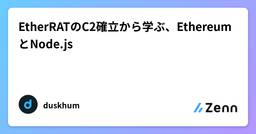
EtherRATのC2確立から学ぶ、EthereumとNode.js
Zennの「JavaScript」のフィード
はじめにインシデントレポートを読んでいて、EtherRATというマルウェアがEthereumを利用してC2の接続先を取得している、という説明に目が留まりました。Ethereumについて知っていたのは、暗号資産やブロックチェーンに関係するものだという程度です。それが感染端末と攻撃者の通信にどうつながるのか、最初は想像できませんでした。JavaScriptで書かれたマルウェアを動かすために、Node.jsまでダウンロードしている点も気になりました。私はセキュリティやソフトウェア開発の専門家ではなく、EthereumやNode.jsについても、今回のレポートを読むまでほとんど知りませ...
12時間前
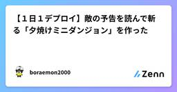
【１日１デプロイ】敵の予告を読んで斬る「夕焼けミニダンジョン」を作った
Zennの「JavaScript」のフィード
今回作ったもの「１日１デプロイ」の新作として、赤い攻撃予告を避けながら3つの部屋を突破する短編アクションRPG ザクッ！夕焼けミニダンジョン を作りました。左のスティックでブラピさんを動かし、右の「斬る」で敵を攻撃します。PCでは矢印キーまたはWASDで移動し、Space キーで斬れます。部屋ごとに敵の性質が変わります。部屋1：近づいて突進する敵部屋2：突進する敵と、離れて弾を撃つ敵部屋3：円・扇・連続弾を使うボス敵を3体続けて倒すと「一閃」が点灯し、次の斬撃が広がって敵弾も消します。部屋を抜けるたびに2つの護符から1つを選び、斬撃を広げるか、素早くするか、回復...
13時間前
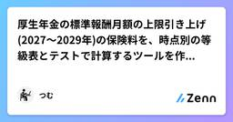
厚生年金の標準報酬月額の上限引き上げ(2027〜2029年)の保険料を、時点別の等級表とテストで計算するツールを作成しました
Zennの「JavaScript」のフィード
はじめに厚生年金の標準報酬月額の上限が、2027年9月から3段階で上がります。自分の月の報酬だと、保険料がいくら変わるのかを、現行と並べて確認できる計算ツールを作りました。ツール: https://seidolab.com/tools/pension-cap/月の報酬別の一覧: https://seidolab.com/tools/pension-cap/tsuki/フロントエンドだけの静的サイトで、入力した内容はブラウザの中だけで計算し、送信しません。この記事では、制度の要点と、「時点によって等級表が変わる」計算をどう組んだかをまとめます。 何が変わるのか厚生...
17時間前
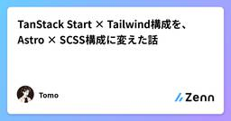
TanStack Start × Tailwind構成を、Astro × SCSS構成に変えた話
Zennの「JavaScript」のフィード
今回は、自分のポートフォリオサイトの構成を見直した話です。https://tomo-site.page/もともとは TanStack Start × Tailwind で作っていたんですが、Astro × SCSS構成にフルリプレースしました。最初は、「流行りのTanStack Start!!」くらいの感じで TanStack Start × Tailwind 構成でポートフォリオを作っていました。ちょうどAIを使った実装も増えてきていて、画面を見ながら「ここもう少し余白ほしい」「このカード並べて」「レスポンシブも対応して」みたいに指示を出していくと、かなり速いです。Tailw...
17時間前
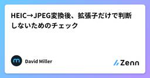
HEIC→JPEG変換後、拡張子だけで判断しないためのチェック
Zennの「JavaScript」のフィード
変換した写真を .jpg で保存したのに、アップロード先が受け付けないことがあります。ファイル名より先に、変換処理が返したデータを確認します。JPEGができているか、画像として開けるかを分けて調べると原因を追いやすくなります。 返ってきたBlobを検査するcanvasの toBlob() に image/jpeg を渡しても、その形式がサポートされなければPNGが返ります。出力を見ずに拡張子だけ .jpg にすると、ファイル名と中身が一致しません。保存前にBlobの形式、先頭バイト、デコード結果を調べます。async function inspectJpeg(blob) { ...
17時間前
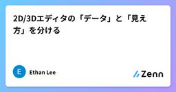
2D/3Dエディタの「データ」と「見え方」を分ける
Zennの「JavaScript」のフィード
部屋の平面図でソファを動かしたら、3D表示にも同じ位置が反映されてほしい。この一貫性を考えるには、描画の前に「何を編集データとして持つか」を決めると整理しやすくなります。私は3D Room Makerの運営側です。この記事は製品の評価ではなく、新しく用意した小さなJavaScript例で設計上の境界を確認するものです。文章と例の作成には生成AIを使い、例はNode.jsで実行して出力を確認しました。本番のソースコードは掲載していません。 1. 一つのソファに、一つの編集データ2D用と3D用に家具一覧を別々に持つと、「片方を更新して、もう片方へ反映する」という同期処理が必要になりま...
1日前
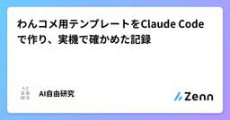
わんコメ用テンプレートをClaude Codeで作り、実機で確かめた記録
Zennの「JavaScript」のフィード
配信のコメントで視聴者が物語の続きを1文ずつ書き、配信者が採用した文がOBSの画面の「本のページ」に書き足されていく。そういうテンプレートを、わんコメ（OneComme）用に Claude Code（Claude Opus 5.5）で作りました。この記事は、作るときに確かめたこと、コメントの扱いで気をつけたこと、実機での確かめ方をまとめた記録です。わんコメ用のテンプレートを作る方の参考になればと思います。!わんコメの公式とは関係のない個人の制作物です。「わんコメ」は登録商標です。記事中の画像はテンプレートの表示部分だけで、わんコメの画面やロゴは含んでいません。この記事の本文も、制...
1日前
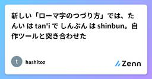
新しい「ローマ字のつづり方」では、たんい は tan'i で しんぶん は shinbun。自作ツールと突き合わせた
Zennの「JavaScript」のフィード
背景自分のツールサイトに、ひらがなをローマ字にするページを置いています。https://hashitosystem.com/tools/romaji/ヘボン式と訓令式を切り替えられるだけの、地味なツールです。ローマ字の告示が新しくなっていたのを、恥ずかしながら最近まで知りませんでした…。原文を読んで、手元のツールの出力と1語ずつ比べたので、その備忘録です。 何が変わったのかここでいう告示は、内閣が「この書き方をよりどころにする」と示す公式の文書のことだ。ローマ字については、昭和29年（1954年）の内閣告示第1号が長く使われてきました。これが令和7年（2025年）...
1日前
個人開発1-5.Go で Cookie セッション認証を実装する
Zennの「JavaScript」のフィード
1.はじめに前回は、Go の API サーバーと MySQL を Docker で動かすところまで完了。今回は、設計した API（新規登録・ログイン・ログアウト・ユーザー取得）を実装します。ログイン状態は Cookie とセッションで管理します。 2.やったこと①OpenAPI からコードを自動生成oapi-codegen というツールで、openapi.yaml から Go のコードを作りました。 go generate ./...できるもの：リクエストやレスポンスの型（Credentials、User、Error）と、「この API にはこの関数」という対応表（...
1日前
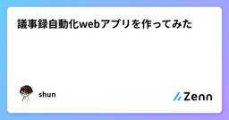
議事録自動化webアプリを作ってみた
Zennの「JavaScript」のフィード
議事録自動化webアプリを作ってみたgeminiAPIとGoogle Apps Scriptを使って議事録を特定のGoogleDocumentにまとめてくれるアプリを作りました。モチベーションとしては現在同級生2人と麻雀に関するSNSアカウントを運営しているのですが、その運営会議を毎週開催しています。その時googledocumentを使っていますが議事録を取るのが少しめんどくささを感じていました。じゃあ作ってみようということでAPIやクラウドサービス、アプリケーションの勉強も兼ねて作りました。 使用した技術スタックフロントエンドHTML/JSバッ...
1日前
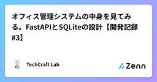
オフィス管理システムの中身を見てみる。FastAPIとSQLiteの設計【開発記録 #3】
Zennの「JavaScript」のフィード
はじめに前回は、使わなくなった小型PCを開発機にして、事務所ではRaspberry Pi 3Bと古いタブレットを組み合わせるまでの経緯を紹介しました。今回は少し中身に踏み込んで、Webアプリ「office_terminal」がどういう構造で動いているかを紹介します。最初の目的は退室点検簿の電子化でしたが、作っていくうちに出社・在席管理、履歴、カレンダーなどが加わりました。そうなると、画面を増やすだけでは済まず、データの持ち方や処理の分け方も考える必要があります。私はまず「何を実現したいか」を考え、AIとの対話で仕様や実装方法を具体化しながら開発しています。今回のコードも、最初...
1日前
【無料公開】React × Firebase × Gemini APIで創る！AI占いWebアプリ開発講座
Zennの「JavaScript」のフィード
# ゼロから作る！React×Firebase AI占いアプリ開発講座### Vite / React 18 / Bootstrap 5 / Firebase / Gemini API「基本文法や簡単なAPIの叩き方は学んだ。次はスマホで快適に動く本物のWebプロダクトを1から作ってみたい！」そんなWeb開発者・個人開発者のための、ハンズオン実践開発講座です。単にAIへテキストを送って回答を得るだけのチュートリアルではありません。本書では、スマートフォンのカメラ起動・画像選択（マルチモーダル解析）から、Firebaseによる会員管理・データ永続化、過去の鑑定結果を引き継ぐ「比較・派生分析」、そして初回鑑定の文脈を考慮して深掘り質問ができる「対話型AIチャット」まで、実用的なフルスタックWebアプリを完全サーバーレスでゼロから構築します。さらに、個人開発者が直面する「無料枠（Spark）と有料枠（Blaze）での画像保存切替ロジック」や「APIキーの漏洩を100%防止するCloud Functionsプロキシ構成」など、実務で使える堅牢な設計（Robust Architecture）まで網羅的に解説しています。---### 💡 本書で得られるプロ仕様の設計ノウハウ1. **スマホ最適化マルチページUI & ルーティング** * React Router（`react-router-dom`）を採用し、固定ボトムナビゲーションを備えた直感的な操作感を実現。2. **Firebase Auth & 保護ルーティング** * メール/パスワード認証およびGoogleログイン。未ログイン者を安全に転送する`ProtectedRoute`の実装。3. **インフラ制限・コストに強い画像処理（`saveImage`）** * 環境変数フラグ1つで、無料枠（Base64/Firestore 1MB制限対応）と有料枠（Firebase Storage）を自動切り替え。4. **Gemini API（`gemini-2.5-flash-lite`）によるマルチモーダル鑑定** * プロフィール情報とスマホ撮影画像（手相・顔写真等）を統合して総合鑑定を実行。5. **過去データからの「分岐・比較再鑑定」＆「文脈保持AIチャット
2日前
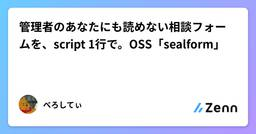
管理者のあなたにも読めない相談フォームを、script 1行で。OSS「sealform」
Zennの「JavaScript」のフィード
!sealform は試作段階のOSSです。暗号の専門家による第三者レビューをまだ受けていません。記事の最後の「できないこと」も読んでから試してください。 夜11時、相談フォームの向こう側夜11時。高校2年生が、学校のサイトの相談フォームにこう打ち込みます。部活の先輩から、毎日のように物を隠されています。親には言えません。送信ボタンを押す指が、少し止まります。「これ、誰が読むんだろう」。その子が想像しているのは、たぶんカウンセラーの先生ひとりです。でも実際には、この文章は送信された瞬間から、サーバーのデータベースに保存されアクセスログに残りエラー監視サービスに...
2日前
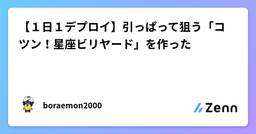
【１日１デプロイ】引っぱって狙う「コツン！星座ビリヤード」を作った
Zennの「JavaScript」のフィード
今回作ったもの「１日１デプロイ」の新作として、ガラスの月球を引っぱって星へ当て、夜空に星座をつくる コツン！星座ビリヤード を作りました。月球の近くを押し、打ちたい方向と反対へ引いて離します。5個の星を中央・左・右のゲートへ入れ、最大5打で星座を完成させる短編ゲームです。1打で2個の星を入れると連鎖になり、ゲートから夜空へ光が走ります。3打で5個すべてを入れるとSランクです。▶ コツン！星座ビリヤードを遊ぶ 遊び方「夜空へ」を押す月球の近くを押す打ちたい方向と反対へ引くパワー表示を見て指を離す中央、左、右の3筋を狙い、5個の星をゲートへ入れる最初の一打...
2日前
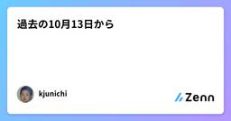
過去の10月13日から
Zennの「JavaScript」のフィード
過去の10月13日からテック関連のブクマやツイートなど前日翌日 2011年https://q.hatena.ne.jp/1318430494https://blog.fenrir-inc.com/jp/2011/08/access_cocoa_from_python_with_pyobjc.htmlhttps://github.com/kavu/cocoa-go 2015年https://github.com/emscripten-core/emscripten/issues/2208https://github.com/h2o/h2o/issues/548h...
2日前
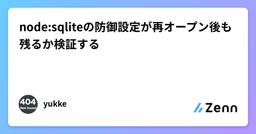
node:sqliteの防御設定が再オープン後も残るか検証する
Zennの「JavaScript」のフィード
Node.jsのnode:sqliteで、接続を閉じて再び開く処理を書く人向けの記事です。enableDefensive(true)で有効にした防御設定がclose()とopen()をまたいで残るかを、macOS arm64のNode.js v26.0.0で検証しました。コードはメモリDBだけを使い、実際のDBファイルには触れません。 結論この環境では、コンストラクターでdefensive: falseを指定し、後からenableDefensive(true)を呼ぶと、その接続が開いている間はスキーマへの直接更新が拒否されました。しかしclose()とopen()を続けると、同じD...
2日前
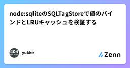
node:sqliteのSQLTagStoreで値のバインドとLRUキャッシュを検証する
Zennの「JavaScript」のフィード
Node.js標準のnode:sqliteで、同じSQLを繰り返し実行する処理を書く人向けの記事です。SQLTagStoreの値のバインドと、準備済み文のキャッシュが満杯になったときの動きを、Node.js v26.0.0 / macOS arm64で確かめました。以下のコードは追加パッケージなしで実行しています。 結論SQLTagStoreのテンプレート内に渡した値はSQL文字列に連結されず、値としてバインドされました。今回の入力では、' OR 1=1 --を検索しても全行が返ることはなく、その文字列を保存した1行だけが見つかりました。また、異なる値で同じ形のSQLを繰り返しても...
2日前
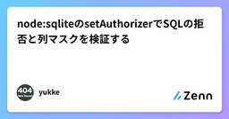
node:sqliteのsetAuthorizerでSQLの拒否と列マスクを検証する
Zennの「JavaScript」のフィード
node:sqliteで、利用者が入力したSQLを実行する機能を作る人向けの記事です。DatabaseSync.setAuthorizer()をメモリ上のデータベースで動かし、読み取りだけを許可する場合と、特定の列をNULLに置き換える場合を比較しました。Node.js v26.0.0 / macOS arm64で、記事中のコードを実行しています。 結論今回の条件では、SQLITE_DENYを返すと秘密列の読み取りと書き込み文を拒否できました。SQLITE_IGNOREを返すと秘密列はエラーにならずNULLになりました。また、ポリシー設定前に準備した秘密列の読み取り文も、この実行環...
2日前

React の useEffect 完全理解 — 依存配列の罠
Zennの「JavaScript」のフィード
React の useEffect 完全理解 — 依存配列の罠 概要useEffect は React のフックの中でも最も使う機会が多く、そして最も誤解されやすいものです。特に「依存配列（第2引数）に何を書くか」で挙動が大きく変わり、初心者がハマる原因の大半はここに集中しています。この記事では、useEffect の基本的な考え方から、依存配列にまつわる代表的な罠、そしてその回避方法までを、動く最小コードとともに整理します。対象は「なんとなく useEffect を使っているが、依存配列の警告を消し方だけで対処している」レベルの方です。 環境React 18 以降（...
2日前